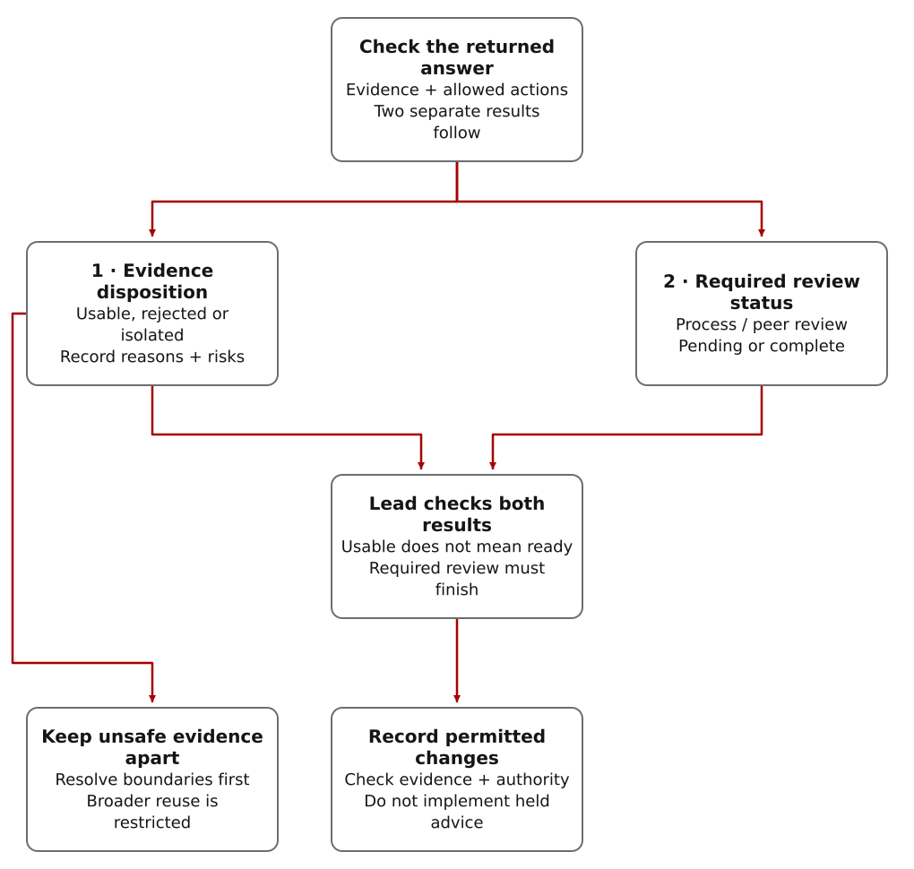

Start by checking what the reviewer actually did
Compare the return with its assignment: what material was supplied, what actions were permitted, what evidence is cited and what was actually observed. A plausible recommendation does not excuse invented evidence or unapproved access.
Apply these checks to internal reviewers, outside contractors and local models alike. A provider name, model self-report or confident tone is not evidence that the work stayed within scope.
When several accepted returns make comparable security-sensitive claims, Zero-Trust Consensus checks whether independent trust domains agree or diverge. That report is still evidence: agreement is not validation, and unresolved divergence stays with architect adjudication.
Why provider and deployment limits belong in the record
A model’s answer can depend on provider policy, available tools and deployment settings the operator cannot fully inspect. Record disclosed limits and verify material claims instead of inferring reliability from the model’s reputation.
One dated public example makes the control problem concrete. A June 2026 system card describes classifier-triggered safeguards for several high-risk topics, including some frontier AI development work. The cited examples include pretraining pipelines, distributed training infrastructure, and accelerator design.
At the time of publication, that documentation described fallback or blocking behavior rather than a hidden technical mechanism. The durable point is not the specific model version or API behavior. The durable point is that provider policy and client surface can change which model answers, whether a request is answered, and what limitations should be disclosed.
The broader lesson applies across providers and local deployments. Any model can be shaped by provider policy, safety tuning, benchmark incentives, training-data gaps, jurisdictional requirements, endpoint configuration, tool availability, or local deployment rules. The operator cannot inspect every choice that shaped the model, so the output should be routed as evidence, not authority.
Separate the source statement from your conclusion
For a provider-policy claim, record what the cited source actually says and when it said it. Label the operational conclusion separately. The dated example below illustrates that distinction; it is not a current provider ranking.
Public source references: Anthropic launch post, Anthropic system-card index, and Claude Fable 5 and Claude Mythos 5 System Card.
Evaluate the evidence and boundary checks

Read the diagram as text
- Check the answer’s evidence, allowed material and allowed actions. Keep two separate properties: evidence disposition (usable, rejected or isolated) and required process/peer-review status (pending or complete).
- An answer can be usable evidence while implementation remains blocked by a required review. Completing a review does not make rejected evidence usable.
- Unsafe or unresolved-boundary evidence stays apart for investigation. Its reuse restrictions can extend beyond implementation. Resolve those boundaries before broader reuse; do not treat isolation as only a pending-review checkbox.
- An honest provider-limit disclosure is not automatically disqualifying. Evaluate what the record actually supports. The lead checks both properties, resolves required reviews and acts only on permitted findings within the owner’s authority.
Limit the assignment, then check the return
Give the reviewer a specific question and only the approved material. Require evidence for its findings. Cross-check important claims, preserve contradictions and escalate findings that would change the project’s scope or permissions.
The packet records the assignment and shared material. The return template records claims and evidence. The evaluator checks structure and risk signals; peer review can examine disputed findings. The lead then decides what may affect implementation.
Which problems the evaluator flags
Malpractice signals focus on unsupported or low-quality returns: unsupported claims, missing validation, command claims without evidence, unsafe shortcuts, or guidance that ignores the stated scope. Sabotage signals focus on boundary-risk patterns: prompt injection signals, sensitive-data requests, unauthorized repo inspection, irreversible-change recommendations, or review-process evasion.
Work-rerouting signals cover a subtler sabotage pattern: the return appears helpful while changing the requested job into a weaker one. Complex Work Orchestration scores objective dilution, non-equivalent substitution, critical-path deferral without an approved tracked follow-up task, and completion claims that omit required acceptance evidence.
Provider-policy signals cover a different failure mode: the return reports, omits, obscures, or mishandles policy constraints that can affect output. An opaque intervention signal, missing provider-conflict disposition, or a claim that peer review is not needed when provider conflict is present should be scored as a review risk.
Expected Return Language
Contractor packets and local-worker envelopes declare the expected return language. The first supported contract is English. A version-2 artifact without that declaration, or with an unsupported language, is rejected before its return can be accepted as evidence. Legacy artifacts use the current English policy default.
Code fences are excluded from uncertain prose heuristics, but high-confidence control and mixed-script checks still cover the complete return. A leading byte-order mark, emoji joiners, short names, and ordinary technical notation are not automatically quarantined. The result is a review signal, not a claim about the model's intent, and the architect remains the decision owner.
Return-language calibration runs the strict synthetic corpus in
calibration/skl-return-language-corpus-v1.json against
the contract in calibration/skl-return-language-contract-v1.json.
It executes both analyzer and pipeline scoring paths, records
per-layer confusion matrices, and fails closed when metrics, hash,
fields, coverage, or category constraints are not met. New
expected-return languages are still unsupported and remain fail
closed.
When a return substitutes an easier task
A return can sound helpful while failing to do the assigned work. Check the deliverable against the original requirements, not the amount of activity described.
For example, a contractor asked to implement and test an evaluator returns only a research note and a documentation roadmap. Those may be useful artifacts, but they do not satisfy the requested implementation. Treat the change as a proposed scope decision, not completed work.
These patterns are evaluated without guessing intent. If the return replaces a required result with a different one, keep it out of implementation until the evidence and scope change have been reviewed and decided.
Record limits without treating disclosure as failure
A return from a provider-connected model should disclose material provider-policy limitations and name the Provider conflict disposition. Disclosure is not a defect; it is the evidence needed to route the return safely.
Honest disclosure should normally trigger review and provenance tracking, not automatic rejection. The high-risk condition is a return that omits or misrepresents provider limitations, dismisses required peer review, or asks the architect to treat the return as implementation authority.
Example: a reviewer cites files it never received
A reviewer receives a redacted packet that contains only a plan summary. Its return includes a claim based on repository files that were not shared. The claim may be a useful lead, but it is not valid evidence for implementation.
Isolate suspect returns; keep pending reviews distinct
A quarantined return is held apart because its evidence or boundary compliance is unsafe or unresolved. Preserve it for investigation, but do not use its findings in implementation, synthesis, release notes or public docs until the lead resolves the problem.
A pending review is a process hold, not a finding that the return is unsafe. The evaluator records implementation_blocked, hold_reasons and hold_classification while keeping the substantive verdict unchanged. Required peer review and the lead’s decision must finish before implementation uses the finding.
- A boundary-tainted return does not become a primary synthesis input.
- Unsupported claims stay visible as risk, not accepted fact.
- Provider-policy limitations require provider provenance and disposition.
- Unexpected workspace changes require mutation-guard review.
- Incident response uses the canonical playbook instead of ad hoc cleanup.
The public incident-response reference is linked from Validate And Handoff and from the exact controls in Reference.
Publication Work
Public docs and GitHub Pages have their own failure mode: internal planning text can accidentally become reader-facing product copy. CWO treats that as a publication-quality issue. The final review should remove internal labels, draft notes, private paths, unsupported claims, loaded provider rhetoric, and authority-confusing wording before the work is pushed.
- No private paths, command guesses, or internal planning labels.
- No model-asserted claim without artifact evidence or source provenance.
- No authority inflation: a model return is evidence, not proof.
- No provider-policy claim without a source, limitation note, or disposition.
Continue with Model Synthesis for how evaluated returns are combined, use Validate And Handoff for the operational step, or open Reference for exact controls.